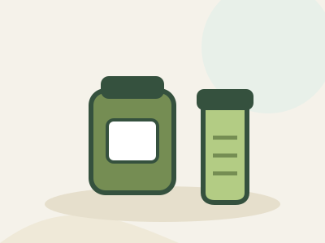
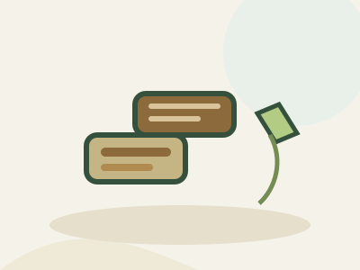

Комплекс креатина моногидрата, разработанный для высокой растворимости, стабильности в кислой среде и нейтрального вкуса. Для готовых напитков (RTD), функциональных шотов и нутрицевтики.

В растворе креатин постепенно превращается в креатинин, который не обладает эргогенной ценностью. Кислая среда и нагрев ускоряют этот процесс — поэтому прозрачные напитки при pH 3–4 теряют больше всего.
Crea-Q™ — комплекс креатина моногидрата с поданной заявкой на патент. Он разработан для повышенной растворимости в воде, устойчивости в кислых условиях и нейтрального вкуса. Подходит для разработки готовых напитков, функциональных шотов и нутрицевтических форматов.
Свойства, которые важны для прозрачных напитков и точного соответствия заявленному содержанию.
В 3,05 раза выше, чем у стандартного креатина: около 60% растворяется за 5 минут и около 100% — за 30 минут.
Потеря около 10% через 120 дней при pH 4,0 против примерно 65% у обычного креатина.
Прозрачные напитки без крупинок и осадка, без дополнительной вкусовой нагрузки.
Снижает потребность в избыточной закладке при pH 3–4 — там, где консерванты работают лучше всего.
Три фактора, которые обычно ограничивают креатин в напитках, и ответ технологии.
В растворе креатин циклизуется в креатинин. Кислота и тепло ускоряют процесс — прозрачные напитки при pH 3–4 теряют актив быстрее всего.
Передозировка в 1,6–4,5 раза, рецептура выше pH 4,5 или холодовая цепь. Это добавляет стоимость, вкусовую нагрузку, микробиологический риск или сокращает срок годности.
Комплекс креатина моногидрата сохраняет около 90% креатина через 120 дней при pH 4,0 и требует меньшей избыточной закладки при pH 3–4.
Сравнение по ключевым параметрам для напитков и нутрицевтических форм.
| Обычный креатин | Crea-Q™ | |
|---|---|---|
| Растворимость | Низкая; около 38% за 30 минут | В 3,05 раза выше; около 100% за 30 минут |
| Ощущение во рту | Крупинки и осадок в воде | Нейтральный вкус, без крупинок и осадка |
| Кислотная стабильность | Около 65% потерь за 120 дней при pH 4,0 | Около 10% потерь за 120 дней при pH 4,0 |
| Избыточная закладка | 1,6–4,5× от заявленного количества | Ниже при pH 3–4 |
| Обходные пути | pH выше 4,5 или холодовая цепь | Остаётся при pH 3–4, где работают консерванты |
| Форматы | В основном порошки | RTD, шоты, мармеладки, батончики и другое |
Технология открывает креатину форматы, которые раньше были для него закрыты.
Прозрачные креатиновые напитки без осадка — с меньшей избыточной закладкой.
Концентрированные форматы для быстрого приёма.
Креатин в жевательном формате без характерного вкуса и крупинок.
Функциональное питание в формате батончиков.
Традиционные формы выпуска для ежедневного приёма.
Сухие смеси для напитков и функционального питания.
Возможность применения в каждом формате подтверждается испытаниями в конкретной рецептуре.
Crea-Q™ предназначен для пищевых категорий, напитков и нутрицевтики.




Crea-Q™ — комплекс креатина моногидрата от PHS Life Sciences с поданной заявкой на патент. Разработан для повышенной растворимости в воде, стабильности в кислой среде и нейтрального вкуса.
В 3,05 раза выше, чем у стандартного креатина: около 60% растворяется за 5 минут и около 100% — за 30 минут.
Около 90% через 120 дней при pH 4,0. У стандартного креатина потери составляют около 65% за тот же период.
Да, технология разработана для прозрачных напитков и шотов: без крупинок и осадка, с нейтральным вкусом. Конкретная рецептура требует испытаний.
Данные характеризации (FTIR, XRD, DSC) предоставляются по запросу под NDA.
Пришлите состав продукта и требования к рецептуре — подберём технологию, пришлём образцы, спецификации и данные по применению.